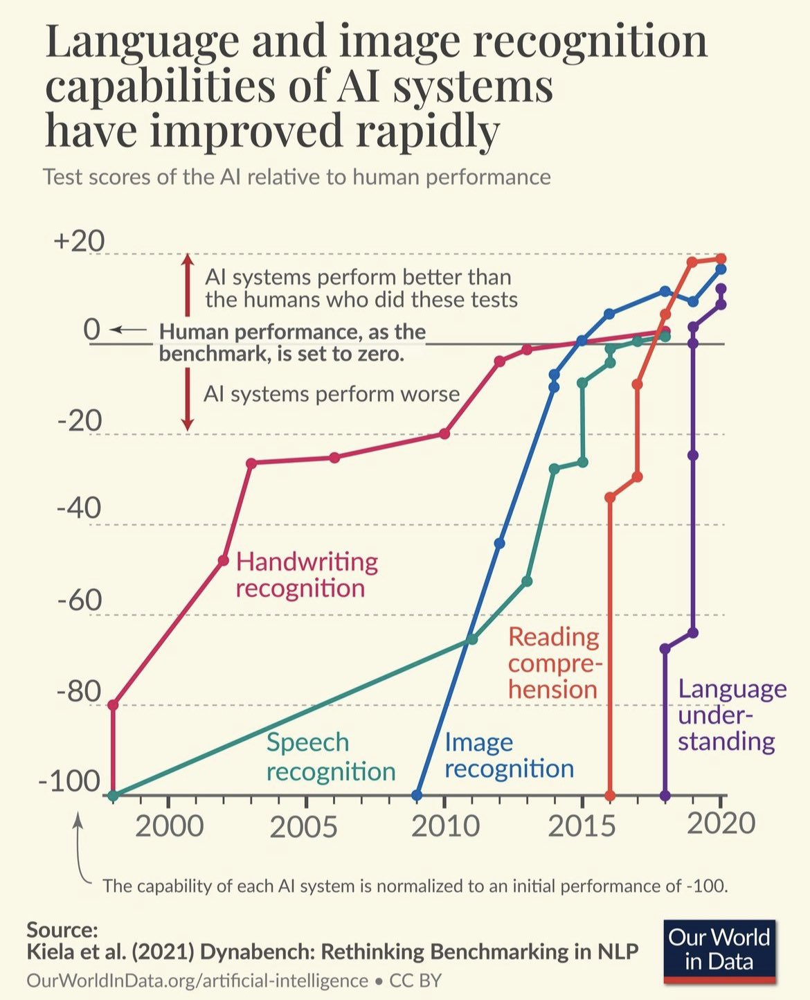
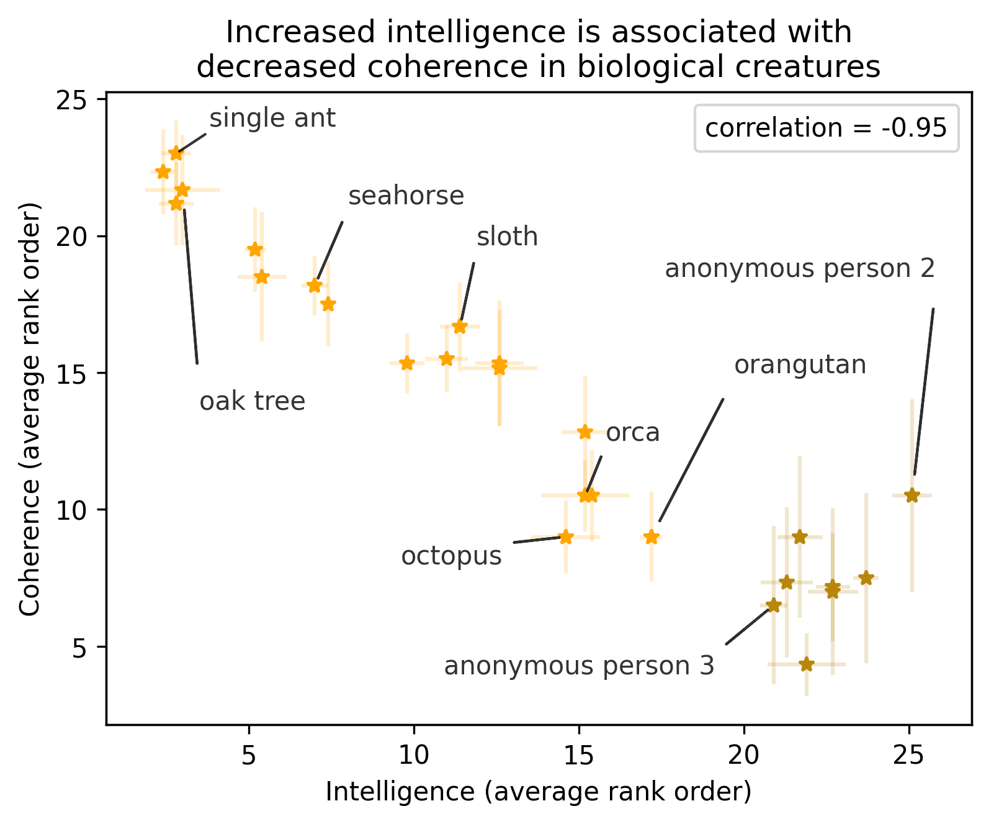
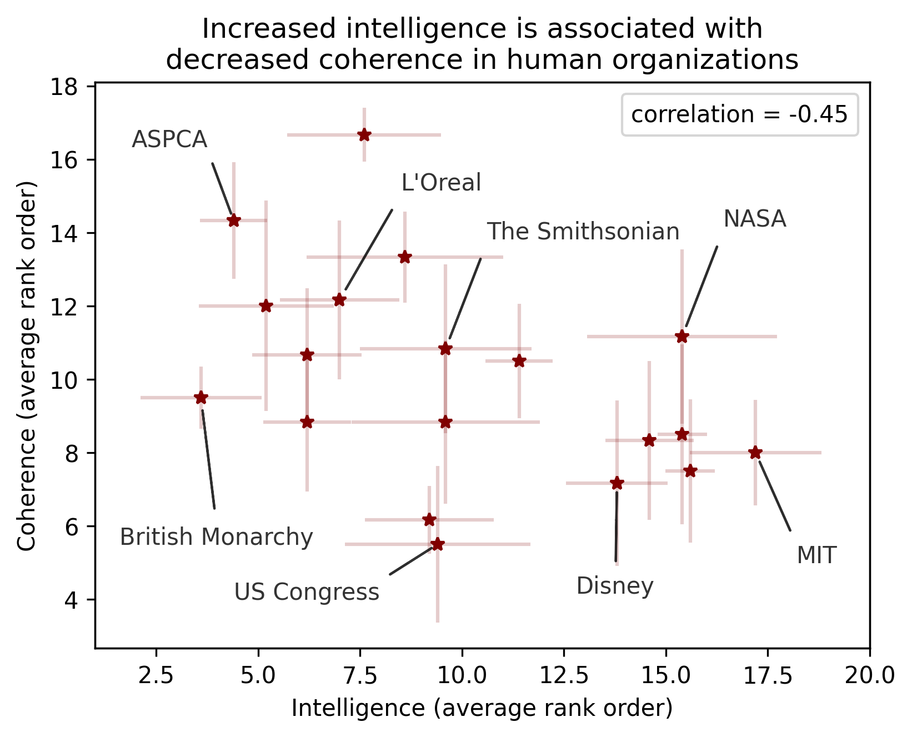
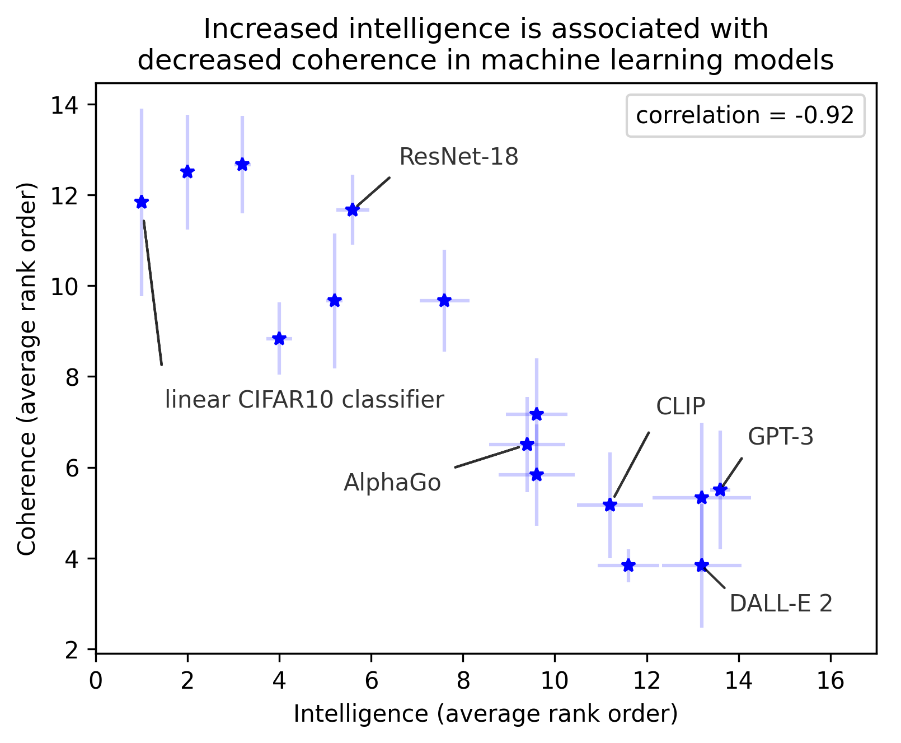

大型语言模型与人工智能
Table of Contents
:ID: a52aa49d-d9d0-4b3f-ba2b-d5eced50e7c6
签到码

概述
技术进步
flowchart LR
id1(((农业革命)))-->id2(((工业革命)))-->id3(((电力革命)))-->id4(((信息革命)))-->id5(((大数据)))
id4-->id6(((人工智能)))
id2-->id7(((蒸汽机)))
新技术的出现导致社会的进步，人工智能被誉为新时代的电力 电力有坏处：
- 触电危险
- 基础设施昂贵
- 消灭旧的行业,产生新的行业和职业
大数据： Jordan Tigani (ex Google Enguineering lead of BigQuery)大数据已死 2011, 2017~2019,大数据并没有成为瓶颈
- 到不了大数据级别 GB
- 存储和计算正在分离
- 没有新业务，数据是线性增长的
- 人们只关心最近的数据
- 真正有大数据的公司，几乎从不查询全部数据, 2017
- 单机的计算能力大增
科学观念的更新
mindmap
root((科学))
:::urgent large
)物理(
相对论<br/>量子力学
核聚变
)人工智能(
深度神经网络
蛋白质折叠与功能
大型语言模型
)生物(
生命起源<br/>线粒体
mRNA疫苗<br/>犯罪学,考古
三个领域发生巨大持久和深刻的变化
- 理解原理越深刻，应用影响越大，–> 革命性的应用
- 物理学案例：核聚变，宇宙的起源，恒星的形成，\(E=MC^2\) ，取之不尽用之不竭的安全能源，50 年以后–>5 年以后
- 生物学案例：真核细胞生物的生化起源：光合作用，细胞呼吸作用，线粒体，外星生命研究
- 发现问题是取得进展的研究方向。
- 深刻理解会改变观念！
- GUI 之后的第二次革命性的技术展示 2022.中旬–> 9 月
什么是 ChatGPT？
Chat Generative Pretrained Transformer
- 本质：智能转化为计算
- 计算的基本对象：内嵌空间 （ embedding ）
- 机器学习方法
- 特点
- 大规模
- 单一的方法（深度学习 Transformer 架构）
- 多语言模式
- 强人工智能，AGI（？）
- 开源开放
- 知道如何工程实现，根本原因不清楚
- 普遍适用其他复杂现象：图像，控制，可迁移
- 机缘巧合
- 语料，训练样本
- until 2003 5 EB ExaByte, 2013 5EB/2 days (1EB = \(10^9\) GB, 1 Zettabye = \(10^{12}\) GB, billions and billions Carl Sagan)
- 模型， 计算量
- 训练不充分
- 规模化的必要的，但很可能不是充分的
- 单一的方法（人工智能，机器学习，深度学习，大型神经网络模型， 计算模型）：1990s 就有，计算量，互联网的兴起
- 工程实现原理完全清楚，结果需要解释和分析，有争议
- 赌注，stake，自信，勇气，信仰
- 偶然 Serendipity
- 硬件彩票 GPU
- 1990 64 个节点的计算机网络，jeff dean, Yoshua Bengio
- 专家：李飞飞, Hinton, Bengio, LeCunn
- 偶然中的必然：生命的生化起源，真核生物的起源，语言的起源（20 万年前）; 演化推动指数级增长
- 硬件彩票 GPU
- 工程实现理解
- 可视化，动画的方式（Jay Alammar, Lilian Weng, Christopher Potts）
- 剥洋葱的方式，一层层往里看
Ilya Sutskever NIPS 2015

大型语言模型

大型语言模型及训练计算量

- Google: LaMDA(137B),PaLM(540B, Minerva,PaLM-E),BERT(0.34B)
- Meta: Galactica,OPT(175B),LLaMA（65B）
- MS&NV: Megatron(530B)
- DM: Chinchilla (70B)
- HF🤗:Bloom(175B)
- EleutherAI: GPT-NEO(2.7B),-J(6B),-NeoX(20B)
- DALL-E, Imagen, Flamingo, Parti, SD
模型大小：神经网络参数个数（推理），训练消耗的计算量
计算问题！
kiloFlops 10^3, metaFlops 10^6, giga- 10^9（十亿）, tera- 10^12(万亿), peta- 10^15（千万亿）, exa- 10^18（百万万亿，百亿亿, zetta- 10^21（万万万亿）, yotta- 10^24, ronna- 10^27, quetta-10^30
Palm Pathway Languane model, -e embodied, open API （3.14） Chinchilla 模型和意义： 所有的模型：训练不足，模型太大, undertrained Amazon: AlexaTM(20B)
锂电池能量密度提升

大型语言模型的能力改善

2012 AlexNet(PC) 2017 Transformer(Attention) 爆炸性发展
社会影响

- 微软入股 OpenAI 100 亿美元，持股增至 49%，
- 人工智能军备竞赛：微软(Sydney)，谷歌(LLaMDA, Bard)，Meta(Galactica, LlaMa), GPT4 发布
- 智能(Intelligence)，能动性(Agency)，知觉（Sentience)，意识(Conciousness)，意志（Free Will)…
- 复旦邱锡鹏 MOSS
- 智能的物质基础?
- 智能是人性根本性的一部分？（从人性中分离？）
- 黄易山 Yishan Wong,前 reddit CEO(2012-2014) 预言 2023 年底会发生某个奇点事件！
ChatGPT的虚假承诺

所谓人工智能革命性的进展令人既担忧又乐观。 乐观是因为智能可以用于解决问题，担忧是因为当今最流行的人工智能方法，也就是机器学习，它的语言和知识的概念从根本上是有缺陷的。
这种机器学习方法把这些内含缺陷的概念整合到我们的技术和产品中， 从而贬低了我们的科学和道德伦理。 The human mind is not, like ChatGPT and its ilk, a lumbering statistical engine for pattern matching, gorging on hundreds of terabytes of data and extrapolating the most likely conversational response or most probable answer to a scientific question. On the contrary, the human mind is a surprisingly efficient and even elegant system that operates with small amounts of information; it seeks not to infer brute correlations among data points but to create explanations.
批评：Oxford Summerfield Lab:"Like others, Chomsky pits “pattern matching” vs. “understanding”. this is a sort of neo-dualism: it diminishes computation by asserting that it lacks some intangible quality (as we might diminish other minds by assuming they lacks some intangible quality (as we might diminish other minds by assuming they lack subjectivity)
从佛教角度，二元论夸大“我相”，执迷
Yoshua Bengio

ChatGPT 令人印象深刻，但在科学上只是微小的一步，最多称得上是工程上的进展。它的主要意义在于唤醒公众对人工智能意义的认识。
- 1990s：1991 "ANN and their application to sequence recognition"
- 2000s：2003 "A Neural Probabilistic Language Model" 理解大型语言模型的基础！
- 2010s：2014 "Neural Machine Translation by Jointly Learning to Align and translate"
- 2018 图灵奖
- 2010 年以前，相信这种方法能成功的屈指可数！
2000s: embedding 代替 n-gram n 元语法，Markov 链
- 数学模型
- 优化方法（表达和实现方式）
大型语言模型的工程实现
用例

- 熟悉的方案：图像，语音，控制，下棋，自然语言
- 无论输入源连续离散都是一种处理方式：自然语言本质上是离散的，图像，语音和控制策略本质上是连续的。（？）
- 多层感知机是最广义的神经网络，包含所有其他的网络类型。断开某些连接即可，比如卷积网
- 信号数学模型+信号的处理模型（网络）
语言编码模型：语素和 n-元语法(n-gram)


- 语素的设计参数选择：字母，音素，音节，单词，
- 统计方法优化选择（无监督学习，Byte-Pair-Encoding）：google sentencepiece; openai tiktoken
- 马尔可夫链：复杂度随维度的诅咒
GPT 中的计算对象：内嵌(embedding)

- 内嵌（单词/语素的编码）
- 独立语义，在句子/文本的不同位置重复出现，可以复用的变量
- 对应于感质（Quolia）：概念（颜色）在意识中的聚类，语言只是一种接口
- 内嵌的相互关系通过计算确认
- 内嵌通过训练样本学习，收集由句法确定的语义
- 预训练内嵌空间（tensorflow）
- 内嵌空间（embedding）：概念空间 , （统计方法确定的）
- 内嵌不是语素，是对语素进行编码得到的，需要端到端训练,token 令牌，约等于单词 100 token 约等于 75 个单词
- 内嵌对应人类语言中的概念（quolia 感质）：离散的，吸收的。（Yoshua Bengio: quolia,离散，概念空间的引力中心）
- 线性组合，简单的矩阵运算
- 网络的权重系数：矩阵运算的系数，对应这些概念之间的联系
- 神经网络：分布式表达模型
内嵌的运算（embedding）


数据（单词）本身是有结构的,相互关系，出现的频率，相似性，交换性，位置（语法，句法)的含义。 由神经网络分布式地表达：概念之间的关系，运算（神经脉冲的传导） 万物都有一种模式，它是我们宇宙的一部分。 它具有对称、优雅和魅力——您总能在真正的艺术家描绘的东西中发现这些品质。 你可以在季节的交替中，在沙子沿着山脊的轨迹中，在杂酚油灌木丛的枝条丛中或它的叶子的图案中找到它。 我们试图在我们的生活和社会中复制这些模式，寻找节奏、舞蹈和令人舒适的形式。 然而，在寻找终极完美的过程中可能会看到危险。 很明显，最终模式包含它自己的固定性。 在这样的完美中，万物都走向死亡。 “There is in all things a pattern that is part of our universe. It has symmetry, elegance, and grace - those qualities you find always in that which the true artist captures. You can find it in the turning of the seasons, in the way sand trails along a ridge, in the branch clusters of the creosote bush or the pattern of its leaves. We try to copy these patterns in our lives and our society, seeking the rhythms, the dances, the forms that comfort. Yet, it is possible to see peril in the finding of ultimate perfection. It is clear that the ultimate pattern contains it own fixity. In such perfection, all things move toward death.” ~ Dune (1965)
图像中的内嵌

- 图像内嵌编码和解码，通过 DCGAN 训练得到
- 内嵌参数的插值：图像的连续变化（男–>女）
- 内嵌的向量运算：图像的修改
- Alec Radford now at OpenAI, credit for OpenAI LLM
GPT3 训练


- 预训练模型生成文本
- 单一大模型训练：355GPU years $4.6M， 300 B (token, 单词，词干/词根）
- 训练样本生成
- 训练：预测下个单词,根据目标修正参数（175 B)
- 数据
- 网络文本
- 代码
- 英语
- 基于上下文理解的训练
GPT3 推理


- 生成模型(Generative):推理一次生成一个单词;序列，自回归模型;对概率分布的采样,是随机的。多模态的根本原因。
- 无监督学习预训练生成有用的参数
- 上下文最大长度：2048 (2k);GPT-4 0.03+0.06/1k@8k, 0.06+0.12/1k@32k; ColT5 64K，自回归模型
- 基本步骤：1.单词转换成内嵌（编码），2.预测，3.内嵌还原成单词（解码）：内嵌的编码是端到端训练得到的。
GPT3 与 Transformer


- 96 个 transformer 解码层， 每个解码层参数~1.8B
- 解码过程
- App React 代码生成
- 迁移学习（特殊任务的细调）： InstructGPT, ChatGPT
ChatGPT
- GPT3.5: codex
- 监督学习，细调
- 强化学习(PPO)构造奖励函数
- 应用强化学习训练改进模型
- 代码是高质量的语言
- 英语是一种严格的形式化语言（蒙塔尤）
- 汉语：图形化文字，语音上多样性不够，多音字，同音字，严重依赖上下文。图像性的优势，语音上的缺陷，语义上表达上有一定的模糊性，似是而非。谐音。
- 汉语样本训练（为辅）
- 乔姆斯基：普遍语法论,能学会外语，翻译的根本。
- Meta，翻译对齐两个内嵌空间的映射关系。
- 为何强化学习？：解决长效奖励问题。
涌现行为（Emergence Behavior)


温度作为物理现象：液态水，蒸汽，水分子到达一定量级才会出现
应用和部署
- 提示工程(Prompt Engineering)
- LLaMA 复刻 GPT (斯坦福Alpaca 7B, 100$）
- 通过 API 比对训练➡商业模式？
- LLaMA (7B) 树莓派移植（4GB, 10sec/token）
提示工程： 人补充长逻辑依赖问题，弥补神经网络长序列理解问题（2k 序列长度）， 与人工智能对话：
- 准确描述输入需求
- 匹配模型多模态
变形金刚（Transformer）

- 结构: 归纳偏差少，通用性好
- 注意力（内注意力（self attention)，交叉注意力， 多头内注意力
- MLP,多层感知机
- 残差结构
- 需要大量的训练样本
- 网络尺度和数据集
位置编码 层归一化 GPT3 软注意力，硬注意力 卷积网的权重系数用另一个网络生成：二阶网络
争议
ChatGPT 是现实的模糊版本

ChatGPT 是现实的模糊复印
- 类似 jpeg 图片对原始图片的有损压缩
- 现实的描述不精确，造成语料和信息的失真和模糊
- 模型幻觉问题（hallucination），造成语料和信息的污染
- 有损压缩显得更智能
生成模型的高效迅速放大污染问题 Markus Hutter Prize 2006 智能是一种压缩，无损压缩: 1GB wiki –> 115MB
GPT4 和语言的未知领域
“它们(LLM)还可能带来新的伦理、社会和文化挑战，需要认真反思和监管。 我们如何使用这项技术将取决于我们如何认识到它对我们自己和他人的影响。
该技术是“人工智能”的一种形式。 “智能”一词源自 inter-（“之间”）和 legere（“选择、挑选、阅读”）。 那么，智能就是能够在事物之间做出选择，挑选出重要的东西，阅读所写的东西。 智力不仅仅是数量或质量； 它是一种活动、一种过程、一种实践。 这是我们用思想和语言做的事情。
但是当我们让 GPT4 为我们做这件事时，我们不是在放弃我们的智能吗？ 难道我们没有放弃选择、挑选、阅读的能力吗？ 我们不是变成了语言的被动消费者而不是主动的生产者吗？”
Jeremy Howard 2023.02.23 GPT 4 and the Uncharted Territories of Language
“The limits of my language mean the limits of my world.” — Ludwig Wittgenstein
They could also create new ethical, social, and cultural challenges that require careful reflection and regulation. How we use this technology will depend on how we recognize its implications for ourselves and others.
This technology is a form of “Artificial Intelligence”. The word “intelligence” derives from inter- (“between”) and legere (“to choose, pick out, read”). To be intelligent, then, is to be able to choose between things, to pick out what matters, to read what is written. Intelligence is not just a quantity or a quality; it is an activity, a process, a practice. It is something that we do with our minds and our words.
But when we let GPT 4 do this for us, are we not abdicating our intelligence? Are we not letting go of our ability to choose, to pick out, to read? Are we not becoming passive consumers of language instead of active producers?
")
{kind=link}
越高级的智能越混乱


神经网络的条理性

展望和挑战
- 效率，开放，出处，有效性，合成
- 基于检索（搜索）的自然语言处理
- 大型语言模型的“最后一公里”
- 网络结构理解
- 维护，高效更新
- 缺点
- 长段落
- 长逻辑推理（chain-of-thought reasoning） 👉 强化学习？
- 自然语料样本空间的污染
满意度调查码